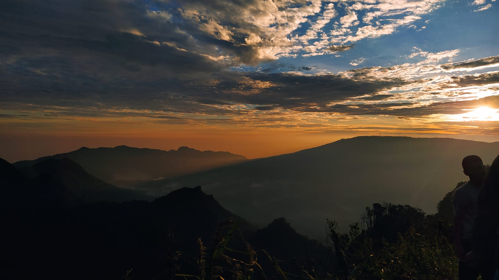

gn.burangrang
2050mdpl.
Gn.Singa
1089 mdpl.

bumi perkemahan ranca cangkuang
1250 mdpl
2050mdpl.
1089 mdpl.
1250 mdpl
Mendaki gunung adalah kombinasi olahraga dan kegiatan rekreasi untuk mengatasi tantangan dan bahaya pada lereng dan jurang untuk mendapatkan pemandangan yang indah dari puncaknya walaupun harus melewati kesulitan ataupun memanjat tebing menjelang puncaknya.
Morepemandu wisata adalah seseorang yang memberikan informasi terkait warisan kultural, bersejarah, dan kontemporer kepada sekumpulan wisatawan atau individu yang terorganisir. Di Indonesia telah dibentuk organisasi yang mewadahi profesi ini, yaitu Himpunan Pramuwisata Indonesia atau HPI.
More